Please consider this information carefully before deciding whether to accept this task.
TITLE OF RESEARCH: Problem demonstrability as pruning of the solution space.
PURPOSE OF RESEARCH: To examine problem solving performance.
WHAT YOU WILL DO: You will be asked to solve a Tic-tac-toe game problem.
TIME REQUIRED: Participation will take approximately 15-20 minutes.
RISKS: There are no anticipated risks associated with participating in this study. The effects of participating should be comparable to those you would experience from viewing a computer monitor for 20 minutes and using a mouse.
COMPENSATION: Upon completion of this task, you will receive a code to enter on the Amazon Mechanical Turk task page, and you will receive the amount that was indicated on the task page.
CONFIDENTIALITY: Your participation in this study will remain confidential. Your responses will be assigned a code number.
You will NOT be asked to provide your name. You will be asked to provide your age and gender.
Throughout the experiment, we may collect data such as browser type, operating system version, mouse movements, and error rates.
The records of this study will be kept private.
We will delete your Amazon Mechnical Turk Worker ID once we process your task and payment (within 3 days of completing this task).
In any sort of report we make public we will not include any information that will make
it possible to identify you without your explicit consent.
Research records will be kept in a locked file; only the researchers will have access to the records.
PARTICIPATION AND WITHDRAWAL: Your participation in this study is voluntarily, and you may withdraw and return the task to Amazon Mechanical Turk at any time. You will receive a compensation only if you complete the task. You may withdraw at any time by closing the web page of the task.
CONTACT: This study is conducted by researchers at the Technion - Israel Institute of Technology.
If you have any questions or concerns about this study, please contact oamir@technion.ac.il.
CONSENT: I have read the above information and the nature and purpose of this research have been sufficiently explained. I consent to take part in the study.
I understand that I am free to withdraw at any time.
I agree and will participate in this study.
אנא הזינו את מזהה הנבדק שקיבלתם:
מזהה נבדק:
משחק איקס עיגול - הוראות
תתבקשו לשחק בגרסה של משחק איקס-עיגול, בו מטרתכם תהיה למצוא את המהלך המנצח עבור השחקן של איקס במצב לוח נתון.
אם תפתרו נכונה תקבלו בונוס של 10 ש"ח.
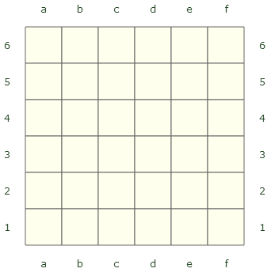
This version of the game Tic-tac-toe is played on a 6x6 board as displayed on the right. Please read the instructions carefully; there will be a quiz on the next step.
הגרסה הזאת של איקס-עיגול משוחקת על לוח 10x10 כפי שמופיע משמאל.
אנא קראו את ההוראות בקפידה, בשלב הבא יהיה שאלון לווידוא ההבנה.
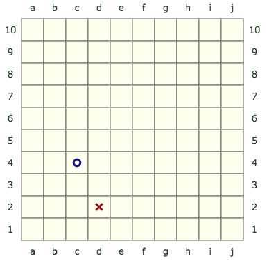
שני שחקנים, X ו-O, משחקים בתורות ומסמנים X או O במשבצות על הלוח.
The player who succeeds in marking four neighboring spaces in a horizontal, vertical, or diagonal row wins the game.
In the image on the right, O won the game by marking four spaces vertically.
השחקן שמצליח לסמן
חמש
משבצות שכנות במאוזן, מאונך או אלכסון, מנצח במשחק.
בתמונה משמאל, X ניצח את המשחק על-ידי סימון חמש משבצות במאונך.
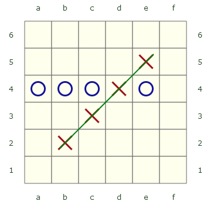
בתמונה הזאת X ניצח על-ידי סימון ארבע משבצות באלכסון.
בתמונה הזאת X ניצח על-ידי סימון חמש משבצות באלכסון.
אנא ענו על השאלות הבאות:
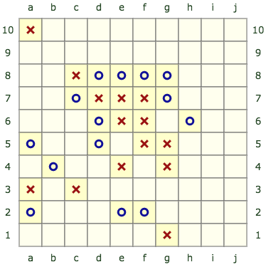
מי ניצח?
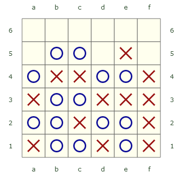
מי ניצח?
מי ניצח?
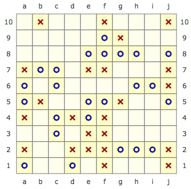
X יכול לנצח במהלך אחד. מהו המהלך?
דוגמה:
a1
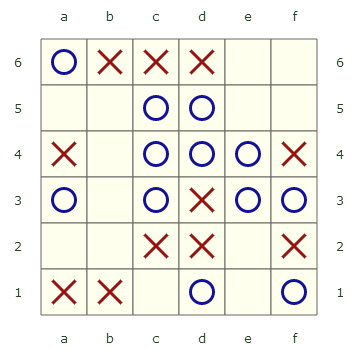
O יכול לנצח במהלך אחד. מהו המהלך?
דוגמה:
a1
משימתך תהיה למצוא את המהלך המנצח עבור X, כך ש-X ינצח ללא חשיבות למהלכיו של O.
כלומר, גם אם O יבצע את המהלכים הכי טובים שניתן, X ינצח.
להלן דוגמה, אנא קראו בקפידה.
Your task will be to determine whether a certain move that X makes will guarantee that
X wins no matter what the O player does. Below is an example, please read it carefully.
בעת פתרון הבעיה, תוכלו להשתמש בלוח אינטראקטיבי כמו זה שלהלן על-מנת לנסות אסטרטגיות שונות.
כשתלחצו על משבצת, X או O יופיעו בהתאם למי שתורו לשחק.
כשתנסו אסטרטגיות שונות, תצטרכו לבצע מהלכים עבור שני השחקנים.
על שני השחקנים לשחק כמיטב יכולתם ולנסות לנצח,
לכן תצטרכו לנסות לבצע את המהלכים הטובים ביותר שתוכלו גם עבור X וגם עבור O.
כעת התור של X לשחק. במצב הזה, X יכול לכפות נצחון בשני תורות.
המשמעות היא ש-X יכול לנצח במשחק ע"י סימון שתי משבצות,
אפילו אם גם O יעשה כמיטב יכולתו כדי לנצח.
בדוגמה הזאת, X יכול להבטיח את נצחונו ע"י סימון המשבצת b3.
לאחר מכן, לא משנה מה O יעשה, X עדיין ינצח.
למשל, אם O יסמן את משבצת
f3
,
אז X ישחק a3 וינצח.
שימו לב ש-O לא יכול לאיים על X באף מיקום אחר, ולכן O יפסיד במשחק הזה בוודאות.
השתמשו בלוח כדי לוודא ש-X אכן יבטיח את נצחונו בשני מהלכים ע"י סימון המשבצת b3.
גם במטלה האמיתית תוכלו להשתמש בלוח אינטראקטיבי כמו זה. אנא השתמשו בו ולא בדף ועט, כיוון שאנחנו רוצים לראות איך אנשים פותרים בעיות מסוג זה.
כל מהלך של X שתבצעו יציג את מספר המהלך, כך שתוכלו לספור בקלות את כמות המהלכים שביצעתם.
It is X's turn to play. In this position, X can force a win in 2 turns.
This means that X can win the game by placing 2 more marks,
even when the O player plays as best as possible to win as well.
In this example, X can guarantee a win by playing b3 (square with thick boarder).
After that, no matter what move O will make, X will still win. For example,
if O plays e3, X will play a3 and win, and if O plays a3, X will play e3 and win. Note that O
cannot threaten X in any other position, so O will surely lose this game.
Use the board to verify that X will indeed ensure a win in two moves by playing b3.
In the real task you will also be able to use an interactive board like this one. Please use it (and not pen and paper), because we want to see how people solve such problems. Each X move you play will show the move number so you can easily count how
many moves you've played.
כעת התור של X לשחק. במצב הזה, X יכול לכפות נצחון בשני תורות.
המשמעות היא ש-X יכול לנצח במשחק ע"י סימון שתי משבצות,
אפילו אם גם O יעשה כמיטב יכולתו כדי לנצח.
בדוגמה הזאת, X יכול להבטיח את נצחונו ע"י סימון המשבצת b3.
לאחר מכן, לא משנה מה O יעשה, X עדיין ינצח.
למשל, אם O יסמן את משבצת
f3,
אז X יסמן את a3 וינצח.
שימו לב ש-O לא יכול לאיים על X באף מיקום אחר, ולכן O יפסיד במשחק הזה בוודאות.
השתמשו בלוח כדי לוודא ש-X אכן יבטיח את נצחונו בשני מהלכים ע"י סימון המשבצת b3.
שימו לב שניתן להשיב את הלוח למצב ההתחלתי ולנסות מחדש על ידי לחיצה על כפתור "אתחל".
גם במטלה האמיתית תוכלו להשתמש בלוח אינטראקטיבי כמו זה. אנא השתמשו בו ולא בדף ועט, כיוון שאנחנו רוצים לראות איך אנשים פותרים בעיות מסוג זה.
כל מהלך של X שתבצעו יציג את מספר המהלך, כך שתוכלו לספור בקלות את כמות המהלכים שביצעתם.
It is X's turn to play. In this position, X can force a win in 2 turns.
This means that X can win the game by placing 2 more marks,
even when the O player plays as best as psossible to win as well.
In this example, X can guarantee a win by playing b3 (square with thick boarder).
After that, no matter what move O will make, X will still win. For example,
if O plays f3, X will play a3 and win, and if O plays a3, X will play f3 and win. Note that O
cannot threaten X in any other position, so O will surely lose this game.
Use the board to verify that X will indeed ensure a win in two moves by playing b3.
In the real task you will also be able to use an interactive board like this one. Please use it (and not pen and paper), because we want to see how people solve such problems. Each X move you play will show the move number so you can easily count how
many moves you've played.
המהלך הראשון כדי להבטיח את נצחונו של X הוא:
Is b3 a winning move for X:
אנא הסבירו בקצרה את האסטרטגיה ששימשה אתכם לפתרון הבעיה:
בלוח שיוצג לכם, השחקן
O
יוכל לכפות הניצחון תוך
4
מהלכים.
עליכם למצוא את המהלך המנצח עבור השחקן
O,
כך ש-
O
ינצח ללא חשיבות למהלכיו של
O.
כלומר, גם אם השחקן
O
ישחק באופן הכי טוב שניתן, השחקן
O
ינצח במשחק.
שימו לב שכדי לנצח, שחקן צריך חמישה סימונים רצופים בשורה, בטור או באלכסון.
אם תענו נכונה, תתבקשו לשחק את המשחק נגד המחשב, אז נסו לזכור את המהלכים שאתם עושים.
יהיו לכם 10 דקות לפתרון הבעיה. שעון עצר יוצג בצד ימין של המסך.
תקבלו בונוס של 10 ש"ח אם תפתרו נכונה.
כאשר אתם מוכנים להתחיל, לחצו על כפתור "המשך".
Is d6 a winning move for O?
If so, what is the next move X will need to make to ensure the win?
If not, what move can O make
to block X?
Note that to win, a player needs to have 4 consecutive marks
(row, column or diagonal).
After you submit your answer, you will be asked to explain your strategy and play the game against the computer, so try to
remember the moves you make.
You have 10 minutes to solve the problem. A timer is shown below.
עבודה טובה, המהלך הראשון שבחרתם הוא נכון! כדי לראות אם שאר הפתרון שלכם נכון, שחקו את המשחק נגד
O
.
הפעם, כאשר תשתמשו בלוח המחשב יעשה את המהלכים עבור
O
.
לחצו המשך ברגע שאתם חושבים שניצחתם במשחק.
יעמדו לרשותכם 3 דקות להשלמת השלב הזה.
הזמן שנותר:
הזמן שנותר:
במצב הזה,
O
יכול לכפות ניצחון ב-
4
תורות.
מצאו את האסטרטגיה המנצחת של
O
.
השתמשו בלוח כדי לנסות אסטרטגיות שונות.
X can win the game in 5 moves no matter what
O does. Is the first move to win the game d6
(square shown with thick black border)?
Assume that both players try their best to win the game.
Use the board to try out different strategies.
Each X move you play will show the move number so you can easily count how
many moves you've played. Note that it is now the turn of the O player (after X played the square shown with
the thick black border).
הלוח אותחל למצב הפתיחה שלו, היות שכעת תשחקו נגד המחשב.
תקבלו בונוס של 10 ש"ח אם תפתרו נכונה.
המהלך הראשון כדי לנצח עבור
O
:
Is d6 a winning move for O?:
If you answered "yes", what is the next move that X should play (after f3) to enforce the win?
If you answered "no", what is the first move O should play to block X from winning?
Your answer:
:
עד כמה אתם בטוחים בתשובתכם?
כלל לא
בטוח/ה מאוד
Below are three solutions - your proposed solution, followed by two solutions proposed by other participants.
Please examine all solutions (yours and the two proposed solutions) and vote for ALL solutions you think are correct
After the experiment you will be randomly matched with 3 other workers. If the majority of your group memebers
vote on correct solutions, each of you will get an additional bonus of 10 cents.
Yours: ?
c6
f3
Please explain your voting:
The browser window is too small. Please maximize the browser.
 הגרסה הזאת של איקס-עיגול משוחקת על לוח 10x10 כפי שמופיע משמאל.
אנא קראו את ההוראות בקפידה, בשלב הבא יהיה שאלון לווידוא ההבנה.
הגרסה הזאת של איקס-עיגול משוחקת על לוח 10x10 כפי שמופיע משמאל.
אנא קראו את ההוראות בקפידה, בשלב הבא יהיה שאלון לווידוא ההבנה.
 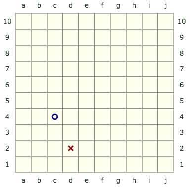
שני שחקנים, X ו-O, משחקים בתורות ומסמנים X או O במשבצות על הלוח.
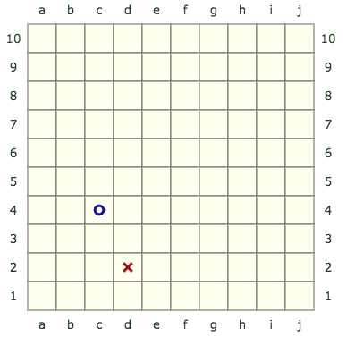
שני שחקנים, X ו-O, משחקים בתורות ומסמנים X או O במשבצות על הלוח.
 The player who succeeds in marking four neighboring spaces in a horizontal, vertical, or diagonal row wins the game.
The player who succeeds in marking four neighboring spaces in a horizontal, vertical, or diagonal row wins the game.
 השחקן שמצליח לסמן
חמש
משבצות שכנות במאוזן, מאונך או אלכסון, מנצח במשחק.
השחקן שמצליח לסמן
חמש
משבצות שכנות במאוזן, מאונך או אלכסון, מנצח במשחק.
 בתמונה הזאת X ניצח על-ידי סימון חמש משבצות באלכסון.
בתמונה הזאת X ניצח על-ידי סימון חמש משבצות באלכסון.
 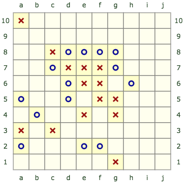
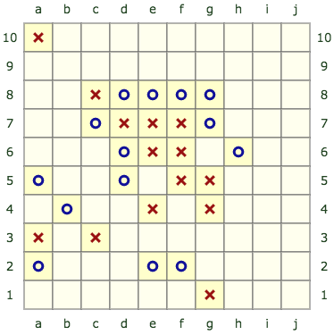


 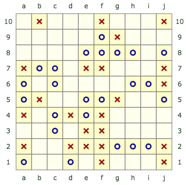
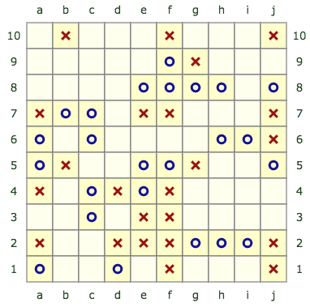